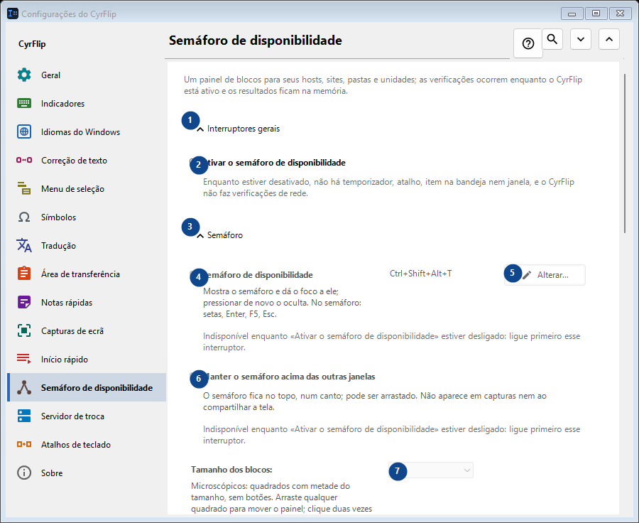
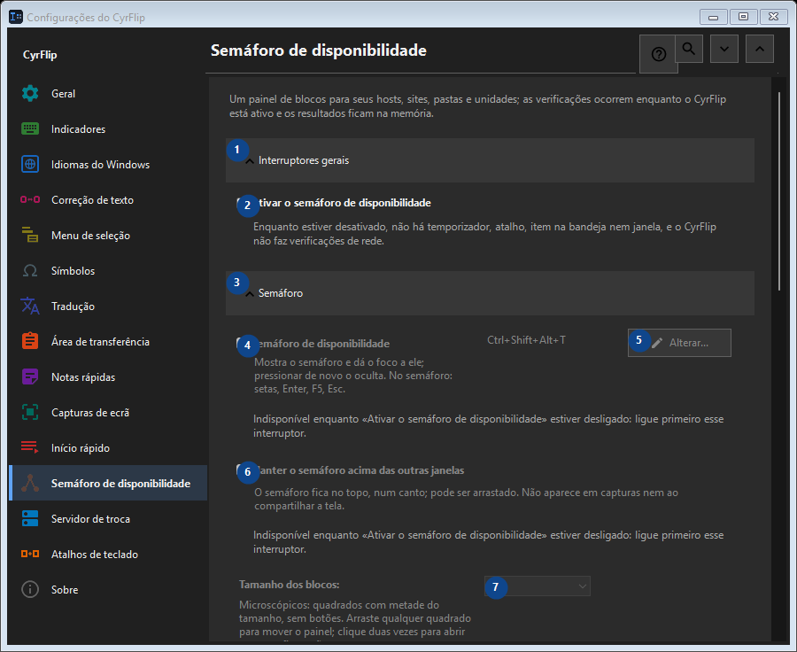

Semáforo de disponibilidade
Para que serve
Um painel de blocos para seus hosts, sites, pastas e unidades; as verificações ocorrem enquanto o CyrFlip está ativo e os resultados ficam na memória.


Ordem de utilização
As definições são aplicadas de imediato. Não existe uma ordem obrigatória; use os grupos abaixo.
Elementos
1. Interruptores gerais
Use este comando para a ação indicada. Leia qualquer confirmação antes de aceitar.
Os seus atalhos2. Ativar o semáforo de disponibilidade
Enquanto estiver desativado, não há temporizador, atalho, item na bandeja nem janela, e o CyrFlip não faz verificações de rede.
Os seus atalhos3. Semáforo
Use este comando para a ação indicada. Leia qualquer confirmação antes de aceitar.
Os seus atalhos4. Semáforo de disponibilidade
Indisponível enquanto «Ativar o semáforo de disponibilidade» estiver desligado: ligue primeiro esse interruptor. Este elemento não está disponível. Ative primeiro a função ou selecione uma entrada.
Os seus atalhos5. Alterar - Semáforo de disponibilidade
Indisponível enquanto «Ativar o semáforo de disponibilidade» estiver desligado: ligue primeiro esse interruptor. Este elemento não está disponível. Ative primeiro a função ou selecione uma entrada.
Os seus atalhos6. Manter o semáforo acima das outras janelas
Indisponível enquanto «Ativar o semáforo de disponibilidade» estiver desligado: ligue primeiro esse interruptor. Este elemento não está disponível. Ative primeiro a função ou selecione uma entrada.
Os seus atalhos7. Tamanho dos blocos
Indisponível enquanto «Ativar o semáforo de disponibilidade» estiver desligado: ligue primeiro esse interruptor. Este elemento não está disponível. Ative primeiro a função ou selecione uma entrada.
Os seus atalhos8. Colunas
Indisponível enquanto «Ativar o semáforo de disponibilidade» estiver desligado: ligue primeiro esse interruptor. Este elemento não está disponível. Ative primeiro a função ou selecione uma entrada.
Os seus atalhos9. Indisponível enquanto «Ativar o semáforo de disponibilidade» estiver desligado: ligue primeiro esse interruptor.
Escolha ou introduza o valor da etiqueta adjacente. Verifique-o antes de continuar. Este elemento não está disponível. Ative primeiro a função ou selecione uma entrada.
Os seus atalhos10. Transparência da janela do semáforo
Indisponível enquanto «Ativar o semáforo de disponibilidade» estiver desligado: ligue primeiro esse interruptor. Este elemento não está disponível. Ative primeiro a função ou selecione uma entrada.
Os seus atalhos11. Mostrar o semáforo
Indisponível enquanto «Ativar o semáforo de disponibilidade» estiver desligado: ligue primeiro esse interruptor. Este elemento não está disponível. Ative primeiro a função ou selecione uma entrada.
Os seus atalhos12. Alvos
Use este comando para a ação indicada. Leia qualquer confirmação antes de aceitar.
Os seus atalhos13. Endereço
Indisponível enquanto «Ativar o semáforo de disponibilidade» estiver desligado: ligue primeiro esse interruptor. Este elemento não está disponível. Ative primeiro a função ou selecione uma entrada.
Os seus atalhos14. Adicionar
Indisponível enquanto «Ativar o semáforo de disponibilidade» estiver desligado: ligue primeiro esse interruptor. Este elemento não está disponível. Ative primeiro a função ou selecione uma entrada.
Os seus atalhos15. Detalhes...
Indisponível enquanto «Ativar o semáforo de disponibilidade» estiver desligado: ligue primeiro esse interruptor. Este elemento não está disponível. Ative primeiro a função ou selecione uma entrada.
Os seus atalhos16. Verificar tudo agora
Indisponível enquanto «Ativar o semáforo de disponibilidade» estiver desligado: ligue primeiro esse interruptor. Este elemento não está disponível. Ative primeiro a função ou selecione uma entrada.
Os seus atalhos17. Histórico de alterações
Use este comando para a ação indicada. Leia qualquer confirmação antes de aceitar.
Os seus atalhos18. Abrir o arquivo do histórico
Indisponível enquanto «Ativar o semáforo de disponibilidade» estiver desligado: ligue primeiro esse interruptor. Este elemento não está disponível. Ative primeiro a função ou selecione uma entrada.
Os seus atalhos19. Mostrar na pasta
Indisponível enquanto «Ativar o semáforo de disponibilidade» estiver desligado: ligue primeiro esse interruptor. Este elemento não está disponível. Ative primeiro a função ou selecione uma entrada.
Os seus atalhos20. Apagar o histórico...
Indisponível enquanto «Ativar o semáforo de disponibilidade» estiver desligado: ligue primeiro esse interruptor. Este elemento não está disponível. Ative primeiro a função ou selecione uma entrada.
Os seus atalhos